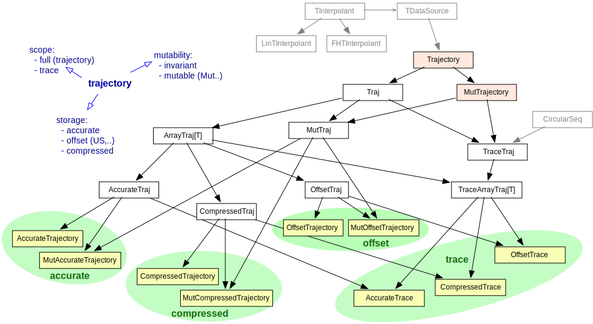

Trajectory Infrastructure
One of the main use cases of RACE is to analyze trajectories, i.e. the change of track state over time. Most of our track input sources only provide such updates as irregular time series that are not synchronized (different tracks updated at different time points). Moreover, the duration between updates can be too long for some properties, which will require interpolation.
The target analysis might also involve a large number of tracks and thus performance and memory requirements can be challenging, especially for RACE applications that can run for an unspecified amount of time (e.g. to monitor live data).
To that end, RACE provides a comprehensive infrastructure that allows to choose the most suitable
trajectory implementation for a given task but hides implementation details from clients by
using high level interfaces (traits) to access them. The top interface types are Trajectory to
read and MutTrajectory to write/extend trajectory data.
There are three major dimensions of trajectory refinement:
- storage model
- mutability
- scope
While some combinations of these refinements are related there is a general need to avoid code duplication along those axes. The RACE trajectory infrastructure reflects that by using a number of ..Traj types that are only internal implementation constructs for the purpose of factoring common parts.

Storage
Storage of trajectory points mostly reflects the required position accuracy. While storage models can be extended, RACE comes with three default storage models:
- accurate
- compressed
- offset-based
Accurate trajectories store latitude and longitude as double floating point values and hence
require the most memory of our storage models.
Compressed trajectories store latitude and longitude pairs as fix point values in 64bit, preserving about 7 degree decimals (corresponding to ~1cm accuracy). Use this storage model if a large number of un-bounded trajectories are recorded. Note that accuracy depends on latitude (largest errors at equator).
Offset-based trajectories use a geographic reference point and a 64bit reference time to store trajectory points as float/int offsets to those reference values. This storage model is therefore only usable for trajectories that span less than 24d.
Mutability
Trajectories can be either immutable of mutable, the latter one being represented by the
MutTrajectory interface that defines methods to add trajectory points.
Scope
Trajectory scope describes the time interval that is covered in the stored data. RACE supports two scopes:
- full
- trace
Full coverage means all updates are stored in the trajectory. This means that memory requirements for unspecified runtime cannot be bounded, regardless of the chosen storage model.
In many cases, a full trajectory is not required and we only need the last part of a trajectory, which we call a trace. RACE traces are stored in circular buffers, i.e. we limit the maximum number of accessible trajectory points and therefore can guarantee that memory will be bounded. This also means that for irregular, asynchronously updated time series we can not assume per se that different traces cover the same duration.
Since traces are an optimization to limit memory requirements for updated trajectories they are always mutable.
Surrounding Infrastructure
Since most RACE trajectories represent un-synchronized irregular time series a common trajectory related task is interpolation, to obtain corresponding time points in sets of relevant trajectories.
Trajectory therefore implements a 3-dimensional TDataSource interface that enables the use
of RACE's TInterpolant infrastructure for abstract interpolation. RACE currently comes with two
implementations:
- simple linear interpolation
- rational spline based interpolation using the FloaterHormann algorithm
For this purpose, trajectory implementations have to provide a conversion from trajectory points to abstract, timed TDP3 data points.